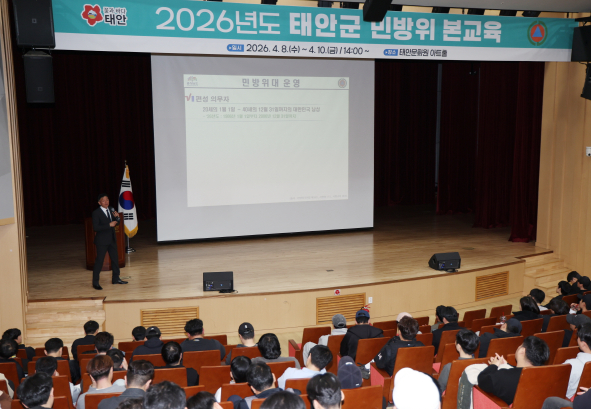

예비군 훈련

민방위 훈련
현역에 끌려가는것은 내가 인정 ... 그래 그럴수 있어
힘들지만
근데
전역하고 예비군 가는거 그리고 이것도 많이 올랐지만
시급 1만원 시대에 밥값정도만 주는 예비군 훈련비
무급으로 가야 하는 민방위
예비군이랑 민방위 갔다오면 진짜 있던 애국심도 사르륵 녹아내님
개인적으로 가장 최악의 경험중에 하나가 새벽 첫차 타고 예비군 훈련소 갔는데
지각 할뻔한거 ㅋㅋㅋㅋ 교통 진짜 주차장도 부족하고
지각한 니가 잘못이야 하는거 생각하면 할수록 개열받는다
용산교장 보고 있나?
하루 일 빼먹을 수 있어서 좋은데?